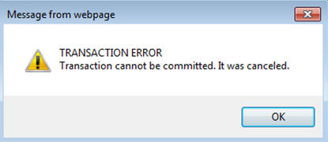

P4210 issues TRANSACTION ERROR for the first order (subsequent transactions get committed successfully)
Purpose of Document
P4210 (Sales Order Entry) always ends error as below,
TRANSACTION ERROR Transaction can not be commited. It was cancelled.

Note:
The error occurs in HTML client does not reflect usual error ASYNCHRONOUS BUSINESS FUNCTION ERROR or WEB CLIENT EXCEPTION with business function F4211FSEndDoc.
CallObject Kernel associated with this error falls into zombie kernel.
e1root_*.log may contain error like "[KERNEL] *ERROR* Associated kernel 19660 not found host SERVERNAME:PortNumber(9414) SocID:56355, freeLocal com.jdedwards.system.net.JdeNetAssociatedKernelException: Kernel for associated message not exist"
JDE_ProcessID.log shall contain message as below,
jtp_lm.c192 JDB9909011 - Failed to create transaction log xxxx
jtp_lm.c1175 JDB9909058 - Fales to initialize the log manager for transaction xxxx
jtp_tpc.c154 JDB9909127 - Failed to force write log : idTransaction
jdb_exet.c11429 JDB9900387 - Failed to prepare transaction
INFO: Entering kernel signal handler, process exiting soon: iParam: 99999999
INFO: Done setting IPC Handle State structures to abandoned, process exiting immediately: iParam: 99999999
EnterpriseOne tools release and JDE.INI settings are not in synch.
<Bug 13526979>: UBE FAILS WITH TRANSACTION LOG REACHES 2GB SIZE: this document explain actual cause of issue 'TransactionLog" parameter. <Internal_Only><Bug 14173242>: TRANSACTION ERROR ON FIRST P4210 TRANSACTION: This document contains workaround for issue</Internal_Only> Example of error message in JDEDEBUG.log (CallObject Kerne Log):-
Entering JDB_CommitUser (UserHandle 34309868) Checking for the pending real time events (UserHandle 34309868) Finished checking for the pending real time events (UserHandle 34309868) Entering JDB_PrepareToCommitUser (UserHandle 34309868) JDB9909165 - Failed to initialize the log manager, buffer is empty JDB9909127 - Failed to force write log : idTransaction JDB9900387 - Failed to prepare transaction JDB9901232 - Canceling transaction because: TC058 JDB_PrepareToCommitUser: local prepare failed Cancelling Transaction : 2886731613_9240800_403419000 Exiting JDB_PrepareToCommitUser with Failure (UserHandle 34309868) Rolling back commit point 1 of the transaction : 2886731613_9240800_403419000 ORACLE DBRollbackCon envr=3013d2a8 conn=327ca6c8 ORACLE DBRollbackCon envr=3013d2a8 conn=312c4b68 Starting Commit Point No : 2 for Transaction ID : 2886731613_9240800_403419000 JDB9900849 - Failed to commit user Exiting JDB_CommitUser with Failure (UserHandle 34309868) KNT0000191 - CommitUser failed, userh=34309868, client=172.16.7.93, pid=54670, mId=381498
To debug this type of issue,
Capture JDEDEBUG_*.log where problem occurs
Analyze JDE_*.log and JDEDEBUG_*.log
Optionally check dump file (e.g., jde_2886731613_9240800_403419000_dmp.log). For this example, 2886731613_9240800_403419000 is transaction ID
Look for statement Like "%with Failure%", "JDB99%", "Cancelling Transaction%", "JDB_CommitUser" and so on
Note:
For this example, the BSFN F4211FSEndDoc returns 0 (SUCCESS). From log, which is represented "Return Value is 0 for F4211FSEndDoc (BSFNLevel = 1).
Since SUCCESS flag returns to JAS (Java Application Server) you do not get ASYNCHRONOUS BUSINESS FUNCTION ERROR or WEB CLIENT EXCEPTION in HTML client
For some cases, this issue can be coming only after build/deployed full package for new tools release (either 8.98.4.7 or 8.98.4.8)